Resposta rápida
A Cama Matrix 3 em 1 (Tebarrot) é montada em 6 etapas, em cerca de 30 minutos, por 1 pessoa, usando chave Phillips, martelo e trena. Você monta a cama principal, o estrado, a cama auxiliar com rodízios e um estrado móvel. Esse estrado fica dentro da auxiliar no modo bicama ou sobe e se prende nos engates para formar a cama de casal.
| Fabricante | Tebarrot |
|---|---|
| Também vendida como | Bicama Matrix, Cama Bibox Matrix, Cama Multiuso 3 em 1 Matrix |
| Modos de uso | Solteiro, bicama (solteiro + auxiliar) e casal |
| Medidas montada | 193,5 × 94 × 47,5 cm (C × L × A); com a auxiliar aberta, ≈ 190 cm de largura |
| Colchão | Solteiro 88 × 188 cm; o da auxiliar com até 12 cm de altura (não acompanha) |
| Peso suportado | 200 kg distribuídos (segundo o manual) |
| Montagem | 1 pessoa · ~30 min · dificuldade média |
| Manual oficial | PDF da Tebarrot (MATRIX Bibox) |
Antes de começar
Dez minutos de organização aqui economizam muito tempo depois.
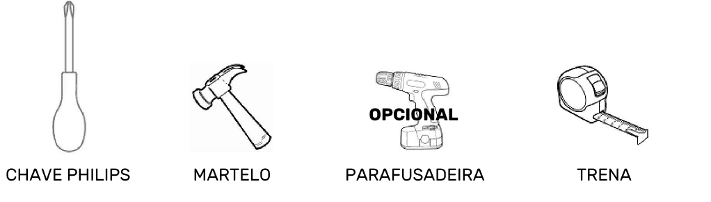
Entenda a cama antes de montar
A Matrix é formada por três blocos. Saber isso torna o manual muito mais fácil de ler.
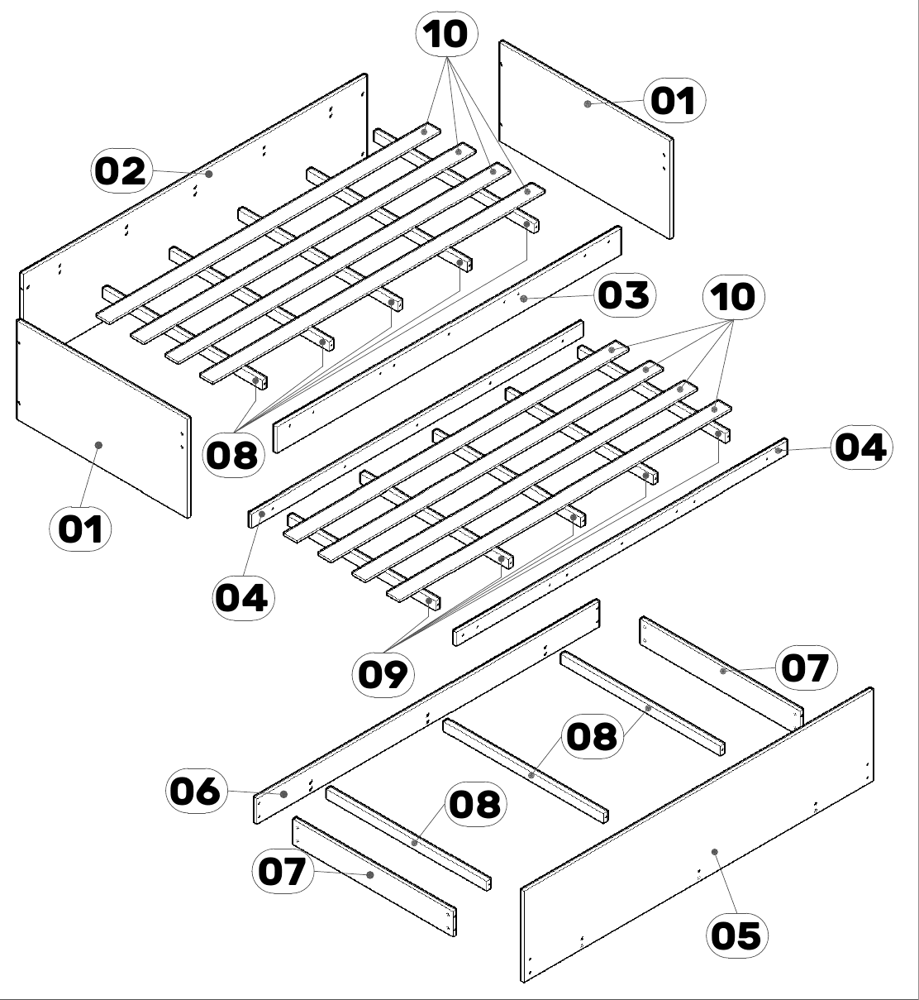
🛏️ Bloco A — Cama principal
Cabeceira e peseira 01, painel traseiro 02 e barra frontal superior 03. Por dentro: 5 sarrafos 08 + 4 ripas 10.🛞 Bloco B — Cama auxiliar (gaveta com rodízios)
Frontão 05, travessa traseira 06 e 2 laterais 07. Por dentro: 3 sarrafos 08, sendo 2 deles com rodinhas.🔁 Bloco C — Estrado móvel
2 barras 04 + 5 sarrafos auxiliares 09 + 4 ripas 10. Ele fica baixo, dentro da auxiliar (modo solteiro + auxiliar), ou sobe e se prende entre a 03 e o 05 pelos engates (modo casal).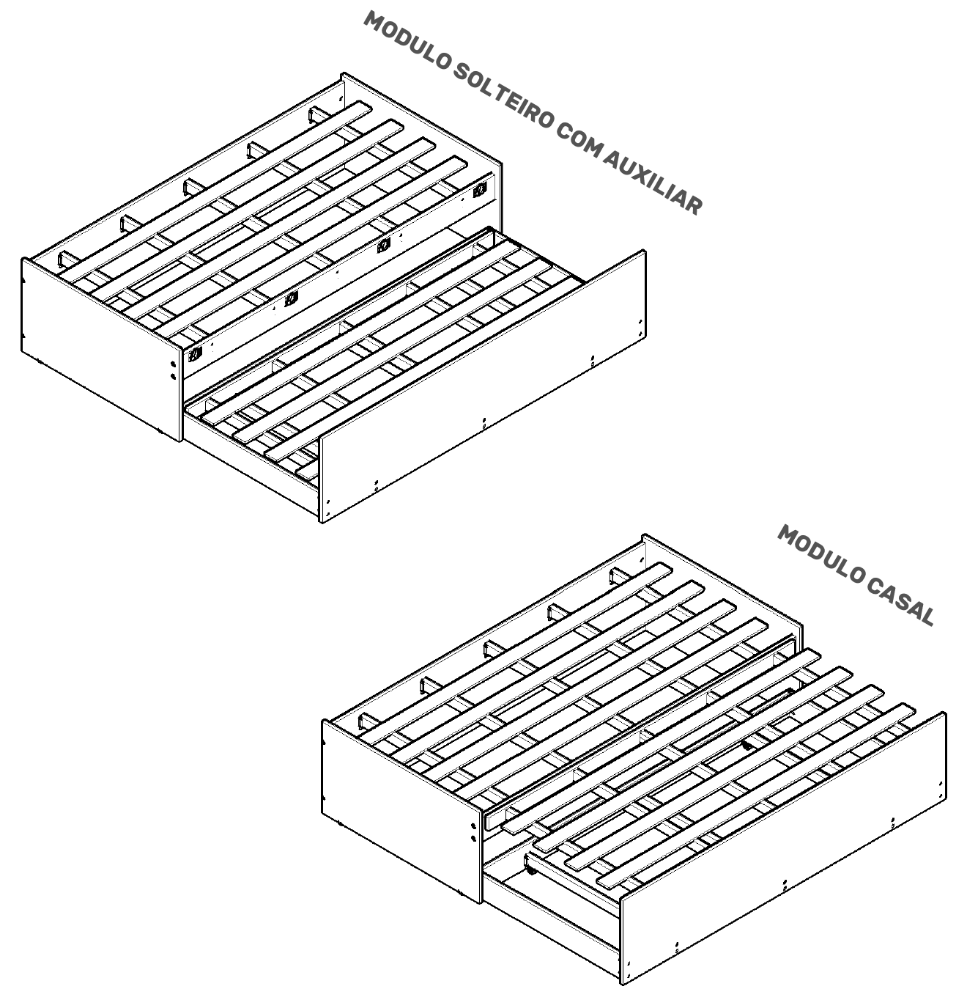
Lista de peças da Cama Matrix
Confira tudo antes de começar. Medidas em centímetros (comprimento × largura × espessura).
| Nº | Peça | Medida | Qtd |
|---|---|---|---|
| 01 | Cabeceira / peseira | 94 × 47 × 1,5 | 2 |
| 02 | Painel traseiro | 190 × 44,5 × 1,5 | 1 |
| 03 | Barra frontal superior | 190 × 12,4 × 1,8 | 1 |
| 04 | Barra do estrado móvel | 183 × 6,5 × 1,5 | 2 |
| 05 | Frontão auxiliar | 193 × 43,5 × 1,5 | 1 |
| 06 | Travessa traseira auxiliar | 188,8 × 12 × 1,5 | 1 |
| 07 | Travessa lateral auxiliar | 88 × 12 × 1,5 | 2 |
| 08 | Sarrafo maior (madeira) | 88 × 4,5 × 2,2 | 8 |
| 09 | Sarrafo auxiliar (madeira) | 81,4 × 4,5 × 2,2 | 5 |
| 10 | Ripas (madeira) | 185 × 7 × 1 | 8 |
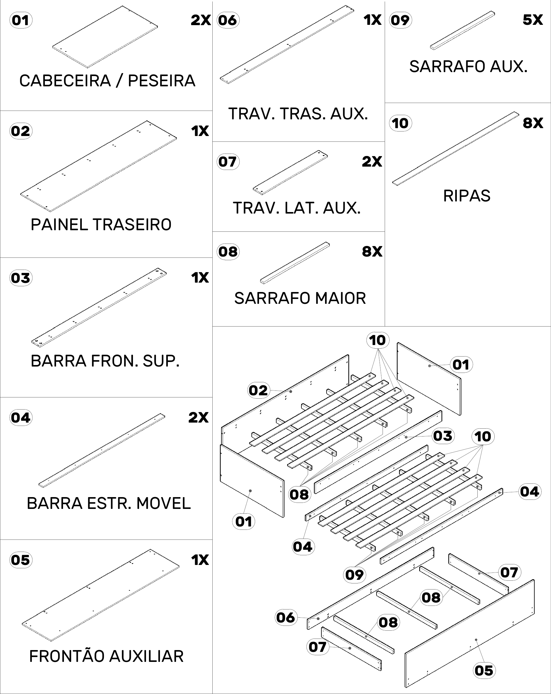
Ferragens (kit de parafusos)
No manual os parafusos estão em escala 1:1 — dá para encostar o parafuso na folha impressa para identificar. Marque cada código ao separar.
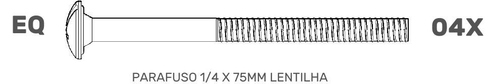
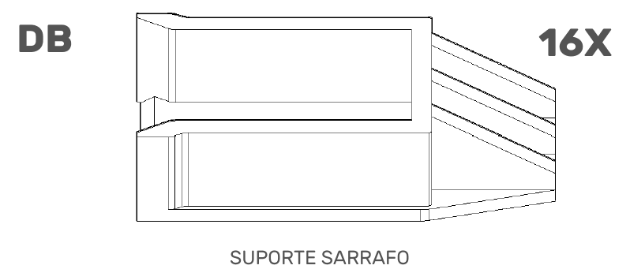
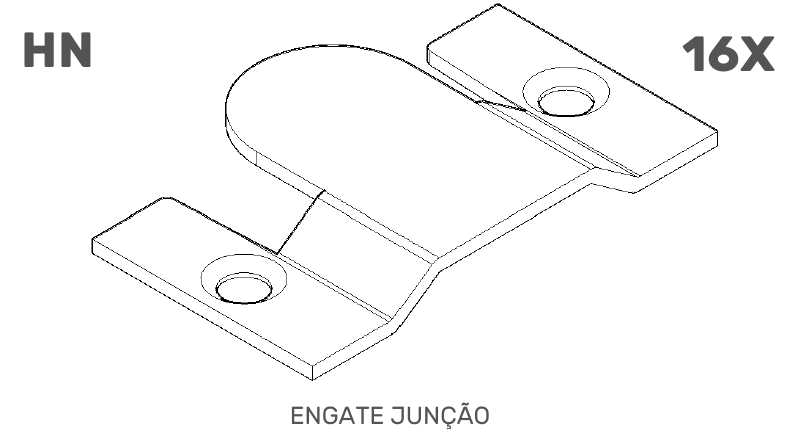
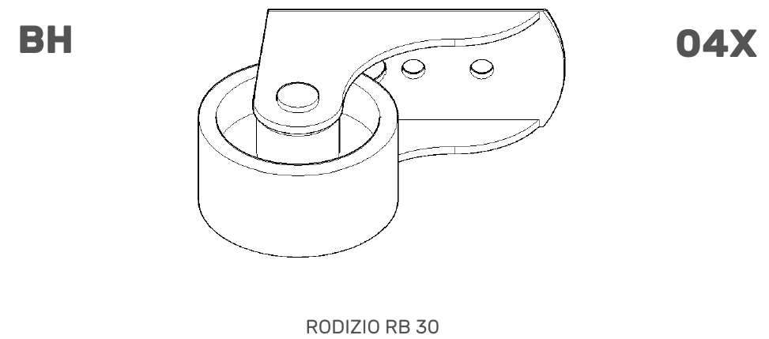
📏 Como usar as medidas
Cada passo tem um quadro com as medidas de onde parafusar, pregar e encaixar.
- Meça sempre a partir da ponta da peça (a extremidade do comprimento). Quando aparecer “da borda de cima”, é a partir da borda longa superior com a peça montada.
- Quase tudo é simétrico: pode medir de qualquer uma das pontas.
- As peças de MDF já vêm furadas de fábrica. Se houver um furo, é ele que vale. Use as medidas para achar o furo certo, conferir a posição ou marcar onde não há furo (pregos das ripas, rodízios e sapatas).
- Marque com lápis e trena antes de pregar ou parafusar.
Passo 1: Pré-montagem das peças
Antes de unir qualquer coisa, você instala as ferragens nas peças soltas — é muito mais fácil com elas deitadas no chão.
1A · Sapatas e rodízios
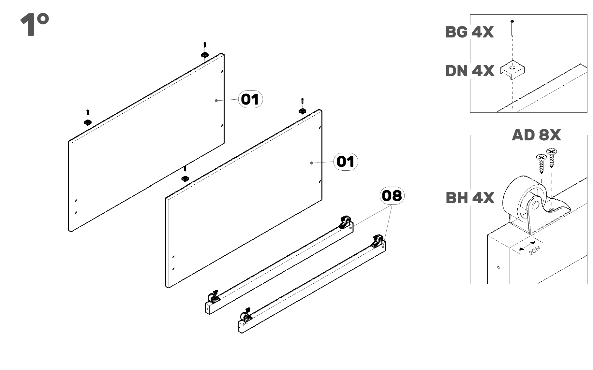
Sapata DN na borda de baixo da 01 | ≈ 11,5 cm de cada ponta da peça (94 cm), com o “U” abraçando a espessura de 1,5 cm. O prego vai no furo central da sapata. |
Rodízio BH no sarrafo 08 | Base do rodízio a 2 cm da ponta do sarrafo (medida do manual), centrada na largura de 4,5 cm, ou seja, a 2,25 cm de cada lateral. Uma em cada ponta. |
Parafusos AD do rodízio | Nos 2 furos da placa do rodízio. Marque com lápis pelos furos e parafuse. |
1B · Engates junção
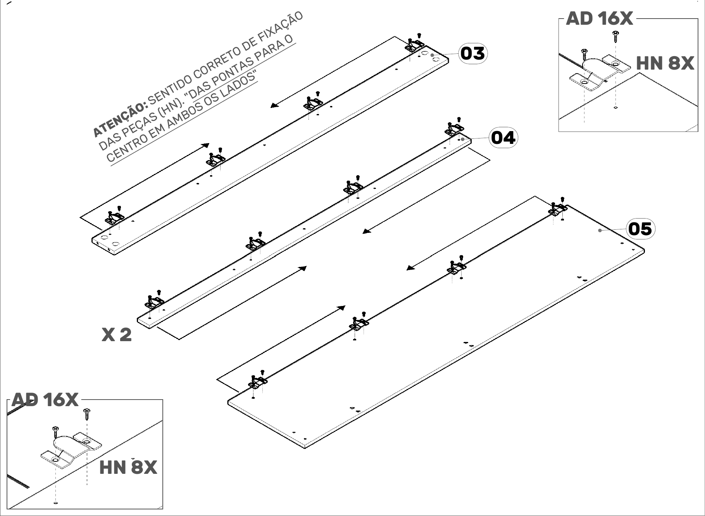
| Barra 04 (183 cm) ×2 | 3,5 · 61 · 122 · 179,5 cm, ou seja, 3,5 cm e 61 cm de cada ponta. No centro da largura (3,25 cm). |
| Barra frontal 03 (190 cm) | 7 · 64,5 · 125,5 · 183 cm, ou seja, 7 cm e 64,5 cm de cada ponta. ≈ 3,3 cm da borda de cima, na face de fora (a mesma das porcas E). |
| Frontão 05 (193 cm) | 8,5 · 66 · 127 · 184,5 cm, ou seja, 8,5 cm e 66 cm de cada ponta. ≈ 5,7 cm da borda de cima, na face de dentro (a mesma dos suportes do passo 4). |
2º parafuso AD | Vai no outro furo do próprio engate. Posicione o engate no furo-guia, marque o segundo furo e parafuse. |
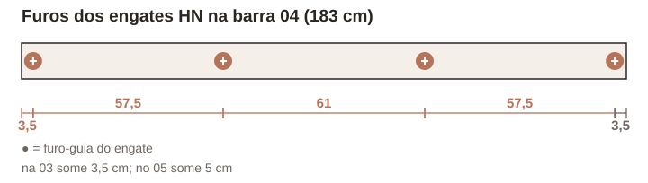
Passo 2: Montar a caixa da cama principal
Agora você une cabeceira, peseira, painel traseiro e barra frontal formando a “caixa” da cama de cima.
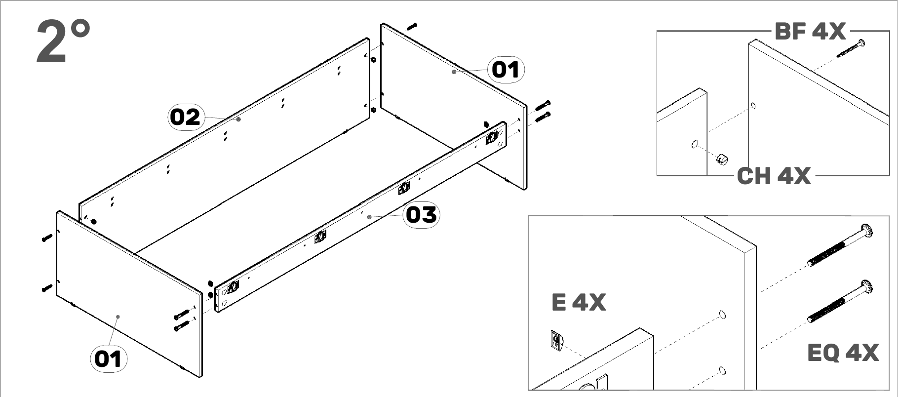
Porcas CH no painel 02 | Furos a ≈ 3 cm de cada ponta, 2 por ponta: um a ≈ 8 cm da borda de cima e outro a ≈ 9 cm da borda de baixo. |
Porcas E na barra 03 | Rebaixos redondos a ≈ 4–5 cm de cada ponta, 2 por ponta. |
Parafusos BF e EQ | Entram pelos furos de fábrica das peças 01, que já estão alinhados com as porcas acima. Não faça furo novo. |
| Conferir o esquadro | Visto de cima, a caixa mede ≈ 193 × 94 cm. As duas diagonais devem medir o mesmo, ≈ 214,7 cm. |
Passo 3: Montar o estrado da cama principal
Suportes por dentro da caixa, sarrafos atravessados e ripas pregadas por cima.
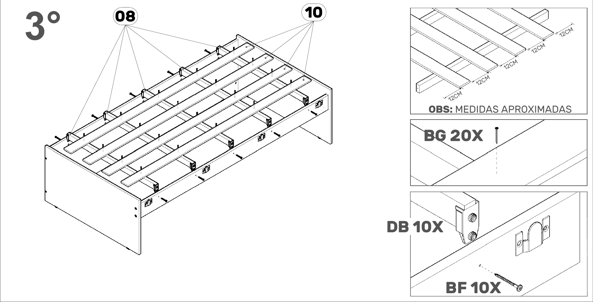
Suportes DB no 02 e na 03 | Centros a 20 · 57,5 · 95 · 132,5 · 170 cm da ponta (20 cm das pontas e 37,5 cm entre eles), iguais nas duas peças, um de frente para o outro. Cada suporte tem um par de furos a ≈ 6 e ≈ 9 cm da borda de cima. |
| Ripas sobre o sarrafo 08 (88 cm) | 12 cm · ripa · 12 · ripa · 12 · ripa · 12 · ripa · 12 cm (12×5 + 7×4 = 88 cm, exato). |
Pregos BG em cada sarrafo | 15,5 · 34,5 · 53,5 · 72,5 cm da ponta do sarrafo, no centro da ripa (3,5 cm da lateral dela) e no centro do sarrafo (2,25 cm da lateral). |
| Ripas no comprimento | A ripa tem 185 cm para um vão de 190 cm. Centralize, deixando ≈ 2,5 cm livres em cada ponta. |
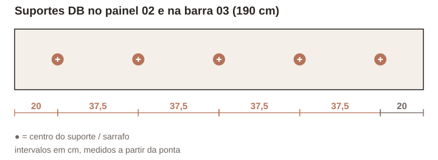
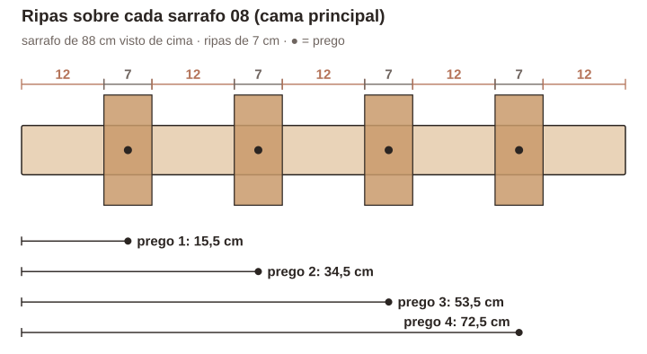
Passo 4: Montar a cama auxiliar com rodízios
A “gaveta” com rodinhas que fica embaixo da cama principal.
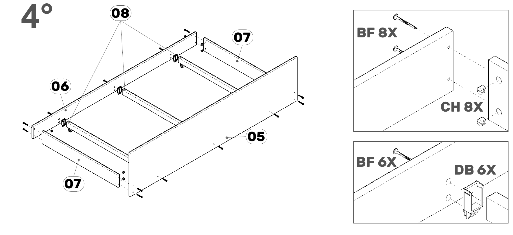
Porcas CH nas laterais 07 (88 cm) | Furos a ≈ 3 cm de cada ponta, 2 por ponta, a ≈ 3 cm e ≈ 8,5 cm de uma das bordas. |
Parafusos BF no 05 e na 06 | Furos de fábrica a ≈ 3 cm de cada ponta, alinhados com as porcas da 07. |
Suportes DB no frontão 05 (193 cm) | Centros a 32 · 96,5 · 161 cm da ponta (64,5 cm entre eles), na face de dentro, perto da borda de baixo (≈ 4 cm). |
Suportes DB na travessa 06 (188,8 cm) | Centros a ≈ 30 · 95 · 159 cm, de frente para os do 05. Siga os furos de fábrica. |
| Qual sarrafo vai onde | Os 2 com rodízio vão nas posições de ≈ 32 e ≈ 161 cm (perto das pontas). O sarrafo simples vai no meio, a ≈ 96,5 cm. |
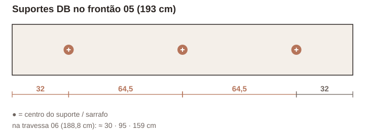
Passo 5: Montar o estrado móvel
É o estrado que fica na auxiliar ou sobe para formar a cama de casal.
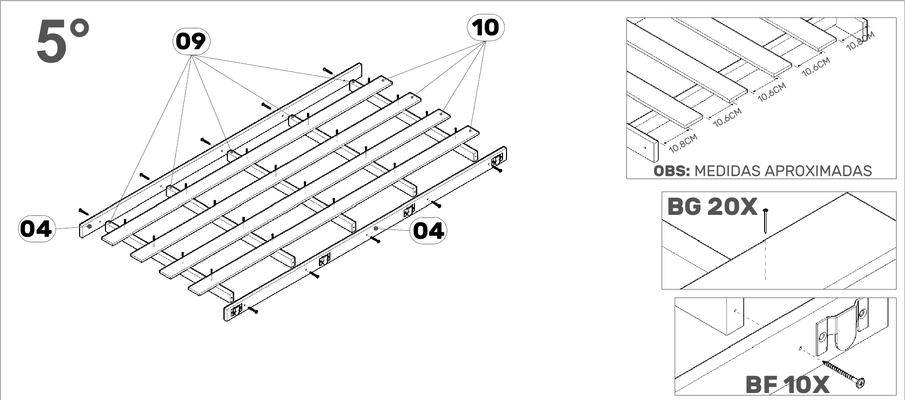
Parafusos BF pela barra 04 (183 cm) | 11,5 · 51,5 · 91,5 · 131,5 · 171,5 cm da ponta (40 cm entre eles), no centro da largura da barra. Cada furo prende a ponta de um sarrafo 09. |
| Ripas sobre o sarrafo 09 (81,4 cm) | 10,8 cm · ripa · 10,6 · ripa · 10,6 · ripa · 10,6 · ripa · 10,8 cm (soma exata: 81,4 cm). |
Pregos BG em cada sarrafo | 14,3 · 31,9 · 49,5 · 67,1 cm da ponta do sarrafo, no centro da ripa e do sarrafo. |
| Ripas no comprimento | A ripa tem 185 cm e a barra 183 cm. Centralize, com ≈ 1 cm passando em cada ponta. |
| Conferir o esquadro | A moldura mede ≈ 183 × 84,4 cm. As diagonais devem dar o mesmo valor, ≈ 201,5 cm. |
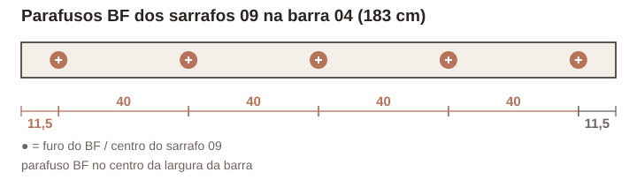
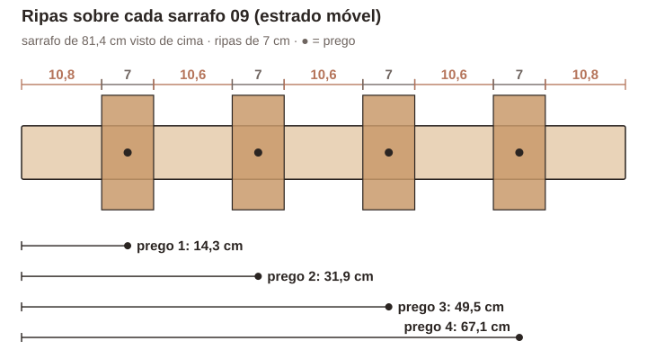
Passo 6: Usar e converter em cama de casal
Coloque a auxiliar embaixo da cama principal e o estrado móvel sobre os sarrafos dela. Pronto: modo solteiro + auxiliar.
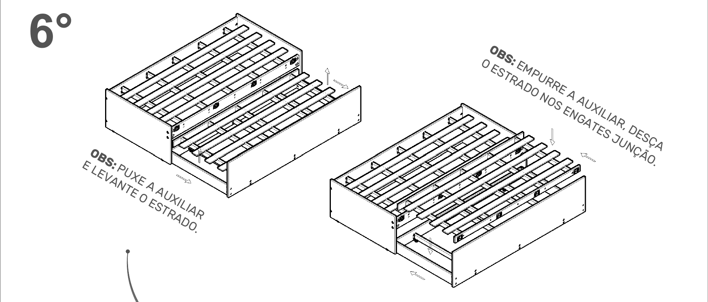
HN instalado no sentido errado (passo 1B) ou o estrado móvel fora de esquadro (passo 5). Não force: confira esses dois pontos.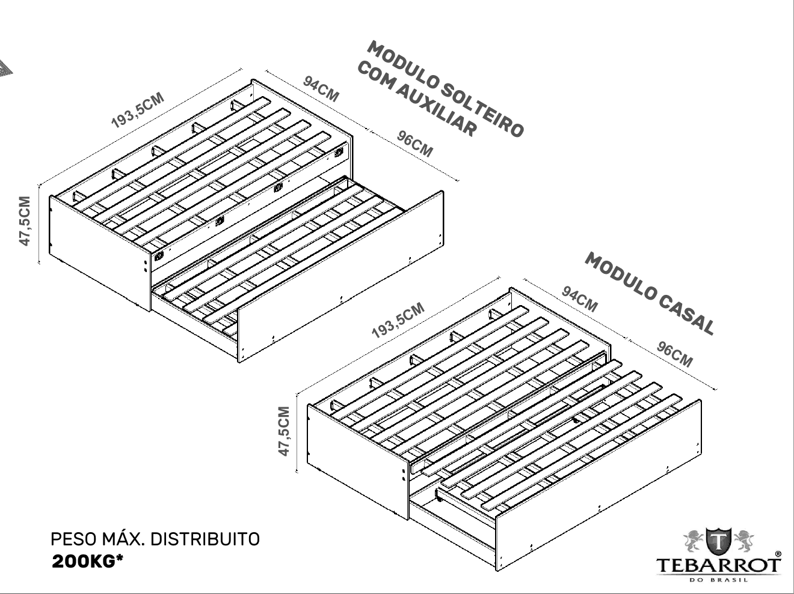
Conferência final
- Limpe só com pano levemente úmido e um pouco de detergente neutro.
- Seque a água na hora — ela pode manchar.
- Nada de produtos abrasivos e evite sol direto.
Perguntas frequentes sobre a Cama Matrix
Como montar a Cama Matrix 3 em 1?
A Cama Matrix 3 em 1 é montada em 6 etapas, em cerca de 30 minutos, por 1 pessoa, com chave Phillips, martelo e trena: (1) pré-montar sapatas, rodízios e engates; (2) montar a caixa da cama principal; (3) instalar suportes, sarrafos e ripas do estrado; (4) montar a cama auxiliar com rodízios; (5) montar o estrado móvel; (6) encaixar a auxiliar e, se quiser, converter em casal. Cada etapa está detalhada acima, com imagens e medidas.
Onde encontro o manual da Cama Matrix em PDF?
O manual oficial da Tebarrot (MATRIX Bibox) está em PDF no site do fabricante: tebarrot.com.br/…/MATRIX-Bibox.pdf. Este guia segue o manual e acrescenta explicações passo a passo e medidas em centímetros de cada furo.
Qual o tamanho do colchão da Cama Matrix 3 em 1?
Colchão de solteiro de 88 × 188 cm. Para a auxiliar deslizar por baixo da cama, o colchão dela deve ter até 12 cm de altura. No modo casal, os dois colchões de solteiro ficam lado a lado. A cama não acompanha colchões.
Quais são as medidas da Cama Matrix montada?
193,5 cm de comprimento, 94 cm de largura e 47,5 cm de altura no modo solteiro. Com a auxiliar aberta (bicama ou casal), a largura total chega a cerca de 190 cm (94 + 96 cm).
Quanto peso a Cama Matrix aguenta?
Segundo o manual do fabricante, até 200 kg com o peso distribuído.
Como transformar a Cama Matrix em cama de casal?
Puxe a auxiliar para fora e levante o estrado móvel. Depois ajuste a auxiliar e desça o estrado sobre os engates junção: uma barra 04 prende na barra frontal 03 e a outra no frontão 05, deixando as duas partes na mesma altura. Para voltar a solteiro, faça o inverso.
Quanto tempo leva para montar e quantas pessoas são necessárias?
Cerca de 30 minutos com 1 pessoa, segundo o manual. A dificuldade é média; separar peças e ferragens antes de começar ajuda a manter esse tempo.
Quais ferramentas preciso para montar a Cama Matrix?
Chave Phillips, martelo e trena. A parafusadeira é opcional; se usar, deixe o torque baixo para não espanar o MDF.
O estrado não encaixa no modo casal. O que fazer?
Quase sempre é um engate junção (HN) instalado no sentido errado (eles devem apontar das pontas para o centro) ou o estrado móvel fora de esquadro. Confira os engates e se as duas diagonais do estrado móvel medem o mesmo, cerca de 201,5 cm.
Quais peças e ferragens vêm na caixa da Cama Matrix?
São 10 tipos de peças (cabeceira e peseira, painel traseiro, barras, frontão, travessas, 13 sarrafos e 8 ripas de madeira) e 10 tipos de ferragem, entre eles 38 parafusos BF, 40 parafusos AD, 60 pregos, 16 engates junção e 4 rodízios. A lista completa está em Peças e Ferragens.
Onde comprar a Cama Matrix 3 em 1?
Ela é vendida em grandes lojas online, como o Mercado Livre (link de afiliado). Também aparece com os nomes Bicama Matrix, Cama Bibox Matrix ou Cama Multiuso 3 em 1 Matrix, da Tebarrot.